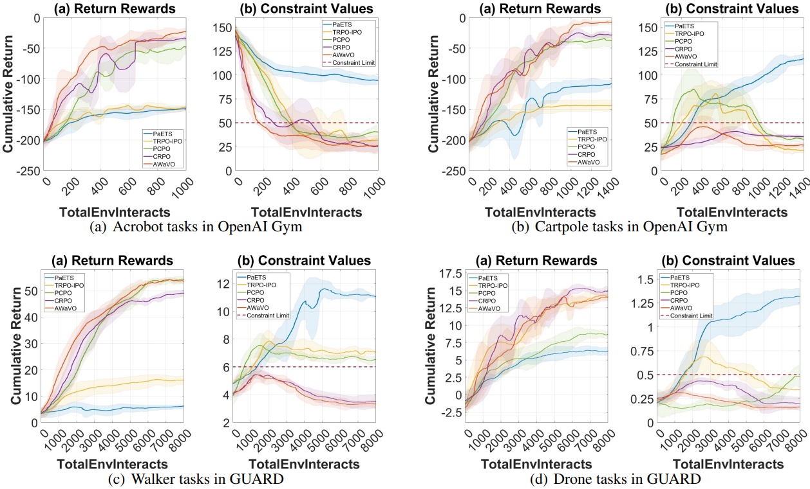

We present AWaVO, the first intrinsically interpretable constrained Reinforcement Learning (RL) framework, through the lens of probabilistic inference. The Key Challenges surrounding RL's interpretability can be conceptualized through three distinct phases:
a. Guarantee of convergence ensures that an RL converges towards an optimal policy, e.g., in an asymptotic manner. b. Transparency in training convergence emphasizes the identification of the underlying convergence process during an RL training. An instance is the convergence rate. Given training iterations, this rate enables the prediction of the expected level of convergence, with a certain degree of confidence. c. Interpretation of decisions seeks to explain why these sequential decisions were made given a state and environment. Specifically, this interpretation involves clarifying the quantitative impact of latent factors on these sequential decisions.
Abstract: Reinforcement learning can provide effective reasoning for sequential decision-making problems with variable dynamics. Such reasoning in practical implementation, however, poses a persistent challenge in interpreting the reward function and the corresponding optimal policy. Consequently, representing sequential decision-making problems as probabilistic inference can have considerable value, as, in principle, the inference offers diverse and powerful mathematical tools to infer the stochastic dynamics whilst suggesting a probabilistic interpretation of policy optimization. In this study, we propose a novel Adaptive Wasserstein Variational Optimization, namely AWaVO, to tackle these interpretability challenges. Our approach uses formal methods to achieve the interpretability for convergence guarantee, training transparency, and intrinsic decision-interpretation. To demonstrate its practicality, we showcase guaranteed interpretability with a global convergence rate $\Theta(1/\sqrt{T})$ in simulation and in practical quadrotor tasks. In comparison with state-of-the-art benchmarks, including TRPO-IPO, PCPO, and CRPO, we empirically verify that AWaVO offers a reasonable trade-off between high performance and sufficient interpretability.
System overview of AWaVO. We reform constrained RL as a Wasserstein variational optimization setup, consisting of two primary submodules: Optimality-Rectified Policy Optimization using Distributional Representation (ORPO-DR) and Wasserstein Variational Inference (WVI).
a. ORPO is conducted to dynamically adapt to uncertainties; and DR provides an entire distribution of the action-value function, contributing to heightened transparency in the convergence. Consequently, this efficiently tackles a significant portion of the deficiencies outlined in Key Challenge a and b.
b. WVI is performed to achieve the quantitative interpretation - i.e., probabilistic interpretation of decisions, thereby tackling Key Challenge c.
Performance comparison over 10 seeds. CRPO and AWaVO outperform PaETS, with a trade-off highlighted: although PaETS offers probabilistic interpretation with Bayesian networks, its convergence is generally unstable. Our proposed AWaVO achieves a better balance between high performance and interpretability. In contrast to two other constrained RL algorithms, i.e., TRPO-IPO and PCPO, we observe an interesting result: PCPO performs better in tasks like Acrobot, Cartpole, and Walker, while TRPO-IPO outperforms PCPO in the more complex drone tasks. Further, in the Real-world Tasks below, we will explore more complex real-world tasks using an aerial robot.

We use our AWaVO as the tracking controller for a quadrotor, where ORPO-DR is employed as the uncertainty estimator, and WVI using A-GSWD is leveraged as the controller. Performance comparison in a real quadrotor: our AWaVO slightly outperforms the constrained RL approach, i.e., PCPO.
Real quadrotor Flight Tasks (FTs):
FT 1 - tracking reference trajectories under external forces without obstacles;
FT 2 - tracking trajectories around dense obstacles;
FT 3 - tracking trajectories under external forces around dense obstacles.
The probability $p(\tau|L_0)$ reveals the degree to which the measurement of external forces, denoted as $n_f$, influences the decisions made by the quadrotor.
The curves in the Figure (a), provided as a reference, give the estimated values of external aerodynamic forces (winds) in real-time. These estimates are derived from the signals collected from onboard sensors. In the Figure (b), the curves illustrate the quantitative impact of external forces $L_0$ on current sequential decisions, specifically, the planned trajectory $\tau$. This impact is quantified as parts of pulse width modulation signals that are fed into the motors to either resist or cooperate with the measured (or identified) aerodynamic forces. Figure (b) aims to quantitatively interpret and visually convey the decision-making process in response to external forces.
Figure (b) becomes particularly important when the agent makes sub-optimal decisions leading to events like quadrotor crashes or collisions. These curves prove valuable for interpreting and performing quantitative analyses of distinct environmental factors, such as winds and obstacles, allowing for an understanding of their magnitudes of influence on the current decision-making process.
An instance to interpret Figure (b). In the case of Reference State 02 (RS 02), located in an area with a combination of wind and obstacles, both aerodynamic effects (i.e., external forces) from winds and obstacles act simultaneously on the quadrotor. In Flight Task 3 (FT 3), represented by the red curve, we can observe the influence of external forces (i.e., aerodynamic effects from winds and obstacles) on the current trajectory planning decisions. The value is approximately $0.40$ at RS 02, implying that the ongoing trajectory planning decisions have a $40\%$ probability of being influenced by the aerodynamic effects. Comparing FT 1 and FT 2, where the values at RS 02 are approximately $0.20$ (FT 1) and $0.18$ (FT 2), respectively, we can decouple the aerodynamic effects generated by the wind on the body (FT 1) and obstacles (FT 2). Quantitatively, at RS 02, situated in an area with a mix of wind and obstacles, the red $p(\tau|L_0)_{FT3}$ is approximately equal to the sum of $p(\tau|L_0)_{FT1}$ (only wind) and $p(\tau|L_0)_{FT2}$ (only obstacles).
@InProceedings{wang24probabilistic,
title = {Probabilistic Constrained Reinforcement Learning with Formal Interpretability},
author = {Wang, Yanran and Qian, Qiuchen and Boyle, David},
booktitle = {Proceedings of the 41st International Conference on Machine Learning},
pages = {51303--51327},
year = {2024},
volume = {235},
series = {Proceedings of Machine Learning Research},
publisher = {PMLR}
}